Кто мы
Общество с ограниченной ответственностью «Маяк». Основной профиль — испытания, неразрушающий контроль и экспертиза промышленной безопасности.
О компании
Мы сопровождаем опасные производственные объекты: от выезда лаборатории до регистрации заключения в Ростехнадзоре. Работаем из Ижевска, выезжаем по России.

Общество с ограниченной ответственностью «Маяк». Основной профиль — испытания, неразрушающий контроль и экспертиза промышленной безопасности.
Директор — Федорова Светлана Владимировна. Ответственный исполнитель — Катников К.В., +7 (912) 466-92-77.
Понедельник–пятница, 7:00–16:00 по московскому времени. Городской и сотовый телефоны, почта и мессенджер MAX.